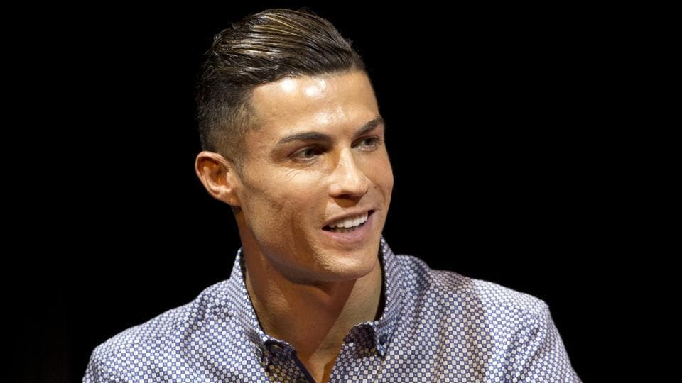

Cristiano Ronaldo dos Santos Aveiro GOIH ComM (Portuguese pronunciation: [kɾiʃˈtjɐnu ʁɔˈnaɫdu]; born 5 February 1985) is
a Portuguese professional footballer who plays as a forward for Serie A club Juventus and captains the Portugal national
team. Often considered the best player in the world and widely regarded as one of the greatest players of all time,
Ronaldo has won five Ballon d'Or awards[note 3] and four European Golden Shoes, the most by a European player. He has
won 32 major trophies in his career, including seven league titles, five UEFA Champions Leagues, one UEFA European
Championship, and one UEFA Nations League. Ronaldo holds the records for most goals (134) and assists (42) in the
Champions League, most goals in the European Championship (14), and is currently tied with Ali Daei for most
international goals (109). He is one of the few recorded players to have made over 1,100 professional career
appearances, and has scored over 780 official senior career goals for club and country.

Born and raised in Madeira, Ronaldo began his senior club career playing for Sporting CP, before signing with Manchester
United in 2003, aged 18, winning the FA Cup in his first season. He would also go onto win three consecutive Premier
League titles, the Champions League, and the FIFA Club World Cup; at age 23, he won his first Ballon d'Or. Ronaldo was
the subject of the then-most expensive association football transfer when he signed for Real Madrid in 2009 in a
transfer worth €94 million (£80 million), where he won 15 trophies, including two La Liga titles, two Copa del Rey, four
Champions Leagues, and became the club's all-time top goalscorer. He also finished runner-up for the Ballon d'Or three
times, behind Lionel Messi (his perceived career rival), and won back-to-back Ballons d'Or in 2013 and 2014, and again
in 2016 and 2017. In 2018, Ronaldo signed for Juventus in a transfer worth an initial €100 million (£88 million), the
most expensive transfer for an Italian club and the most expensive transfer for a player over 30 years old. He won two
Serie A titles, two Supercoppa Italiana, and a Coppa Italia in his first three seasons with the club.
Ronaldo made his senior international debut for Portugal in 2003 at age 18, and has since earned over 170 caps,
including appearing and scoring in eleven major tournaments, becoming Portugal's most capped player and his country's
all-time top goalscorer. He scored his first international goal at Euro 2004, where he helped Portugal reach the final,
and assumed full captaincy of the national team in July 2008. In 2015, Ronaldo was named the best Portuguese player of
all time by the Portuguese Football Federation. The following year, he led Portugal to their first triumph in a major
tournament by winning Euro 2016, and received the Silver Boot as the second-highest goalscorer of the tournament. He
also led them to victory in the inaugural UEFA Nations League in 2019, and later received the Golden Boot as top scorer
of Euro 2020.

{kind=link}
{kind=link}
{kind=link}